Saint-Malo (Ciel Malouin 2004)
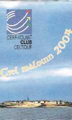

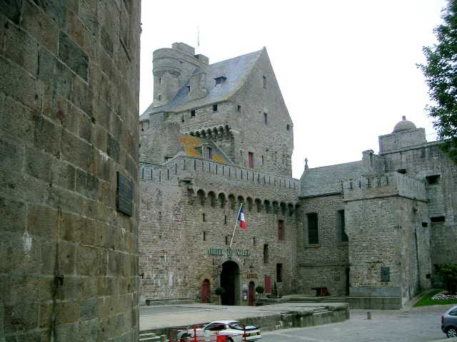
Un grand festival Saint-Malo, cette année, en bordure du vieux Saint-Malo fortifié, la cité "Intra-Muros". Grand festival, mais qui garde les qualités d'intimité et de camaraderie qui se diluent un peu dans les grands Shows de la saison cerf-volistique. Autre avantage : pas de sonos tonitruantes comme à Pornichet ou Stella-Plage, qui vous empêchent de discuter à moins de 100 m du podium et qui deviennent une plaie. Que diable, on ne fait pas tous les boîtes de nuit qui vous rendent sourds à 20 ans, alors messieurs les organisateurs, restez raisonnables, le public passe, mais les cerfs-volistes doivent supporter ça tout le long du jour pendant la durée des hostilités ! Cela devient dissuasif...

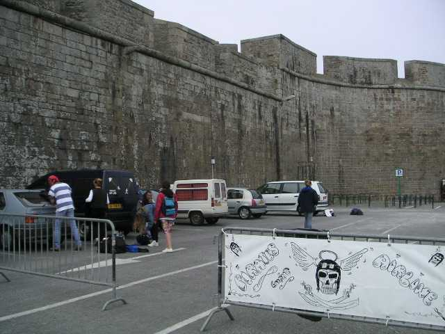
Bon, ceci dit, les cerfs-volistes commencent à arriver la veille au soir, sur le petit parking en bout de cité, le plus pittoresque mais réservé aux véhicules de moins de 2 m de haut (vous comprenez la raison de mon mini camping-car de 1, 96 m ?)

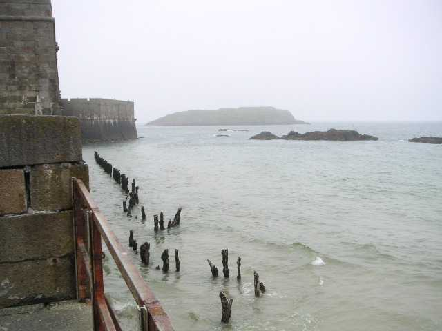
Alors, samedi matin, de bonne heure, prêts à voler. Mais la plage ? Quelle plage ? Ah, ben faut attendre que la mer descende, vers 11 h 30, ça sera bon. Bon, ben on fait comme à Brie, on discute en attendant, et les cerfs-volistes continuent à arriver doucement (plus malins que nous, ou plus fainéants ?).

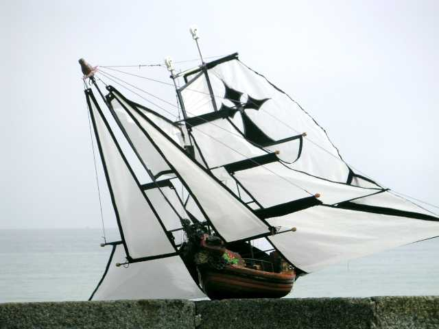
Sur le rempart, Claude nous laisse admirer son magnifique voilier-navette.

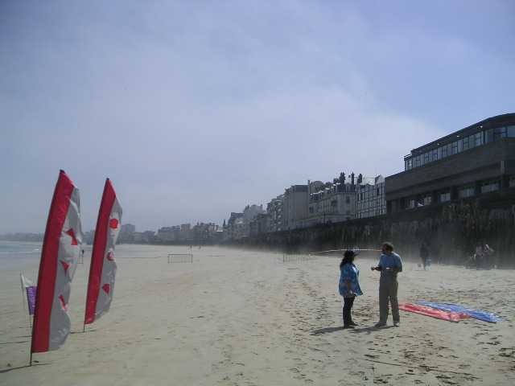
Finalement, la mer se retire. Le sable est bien un peu mou au début, et le bas de plage reste humide et même ruisselant toute la journée, mais c'est supportable si on a des chaussures pas trop délicates.

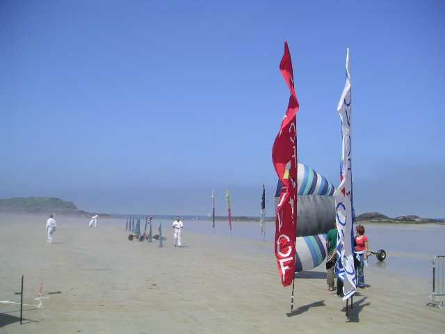
Mais, au fur et à mesure de la journée, une brume se lève, de plus en plus épaisse, jusqu'à cacher le soleil et les cerfs-volants qui arrivent à monter assez haut.

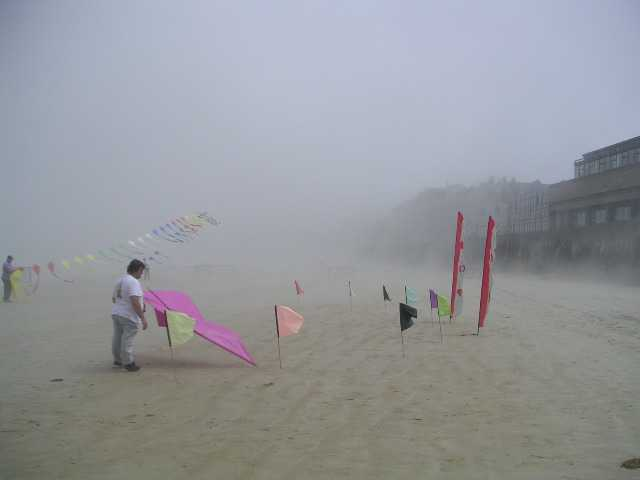

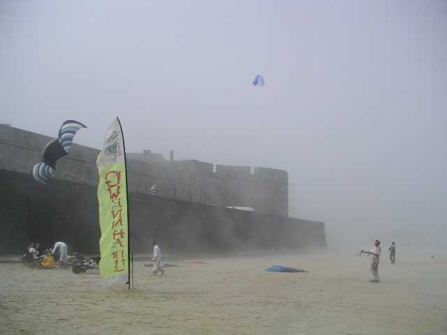
Eh bien, tant pis, on volera quand même.

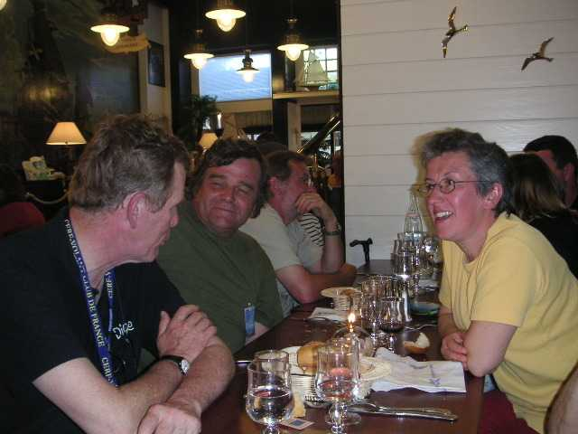
Mais il faut s'arrêter pas trop tard : le soir, banquet plein d'ambiance du CVCC (comme le CVCF, mais celtique) organisé par Claude et Claudine, menu bien arrosé et bien fourni, même si il y en a qui prennent le plat du menu 2 alors qu'ils sont inscrits pour le menu 1...

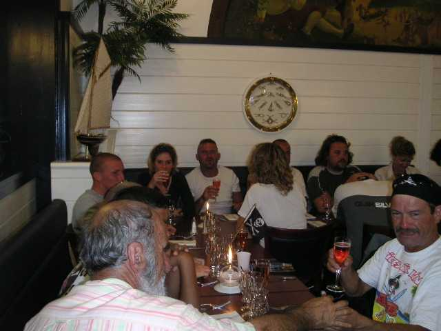
et qu'alors ceux du menu 1 doivent manger les plats du menu 2 même s'ils n'aiment pas le poisson.

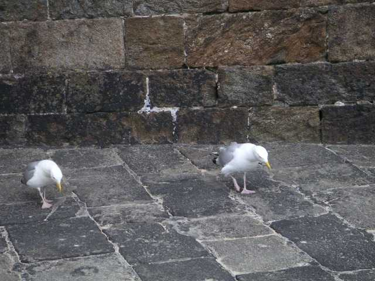
Au retour vers le dodo, les goélands nous font une petite danse façon Country pour nous demander de ne pas envahir leur place dans le recoin des fortifications.

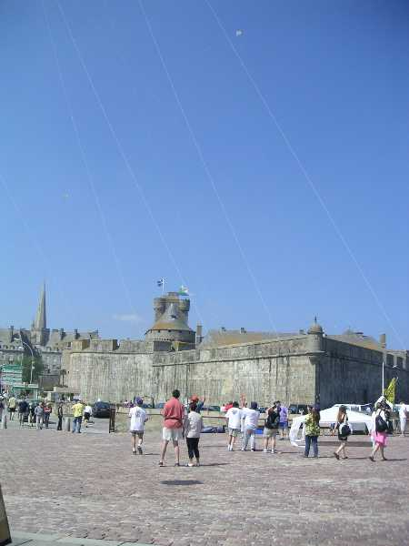
Dimanche matin, rebelote, évidemment, la plage est démontée en matinée. Bon, on tourne un peu en rond mais on est nombreux, on s'excite, on ne peut plus se retenir et on finit par voler sur le trottoir au haut du rempart, dans les remous et au dessus de la route...

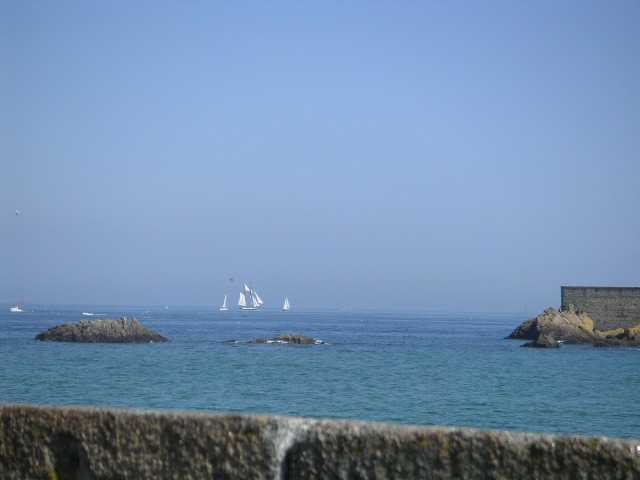
En tous cas, la brume a totalement disparu, un Vieux Gréement sort du port.

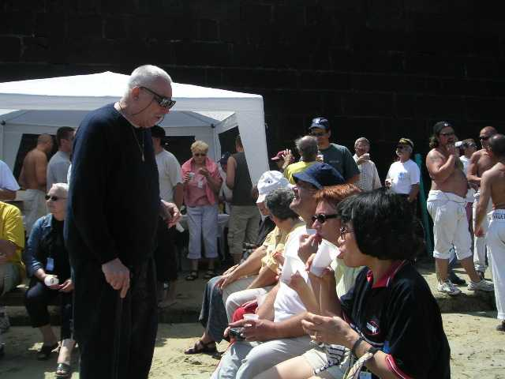
Dès que la plage se libère, on fonce ! Pour voler ? Ben non, c'est l'heure du barbecue ! Mais d'abord, l'apéritif où on retrouve des anciens.

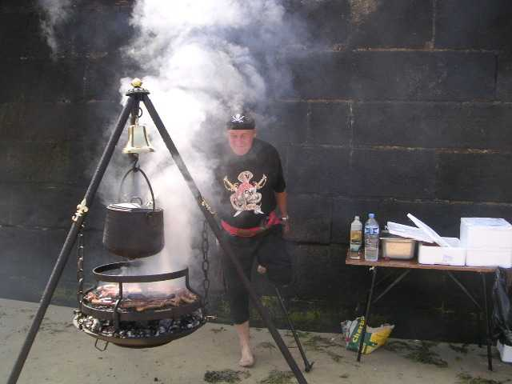
Ensuite, Claude boucane avec sabre et pistolet devant son barbecue d'escouade en fer forgé, conçu et réalisé par lui. Rien ne manque : cloche pour appeler les cerfs-volistes quand c'est prêt, marmite pour conserver au chaud les saucisses cuites, crochets fleurdelisés en laiton pour instruments culinaires, etc.

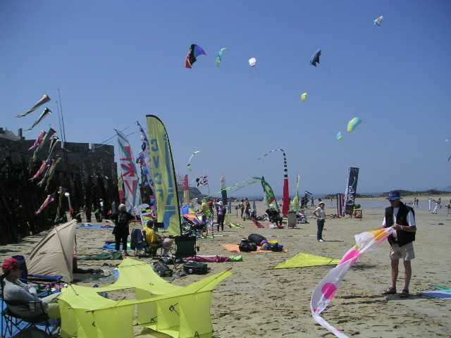
Mais l'après-midi est belle, légère brise de mer, grand soleil, ça déballe un maximum de toile.

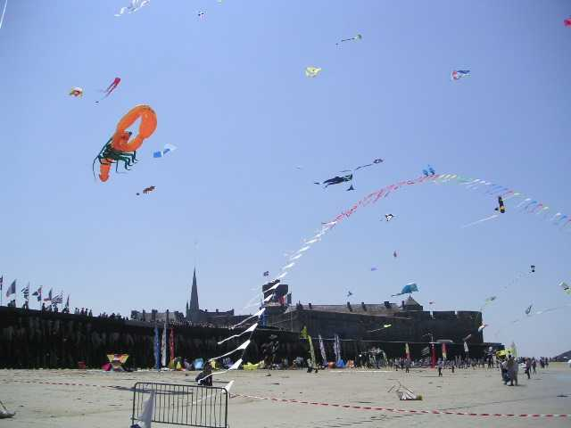
La brise monte un peu, les cerfs-volants suivent le mouvement.

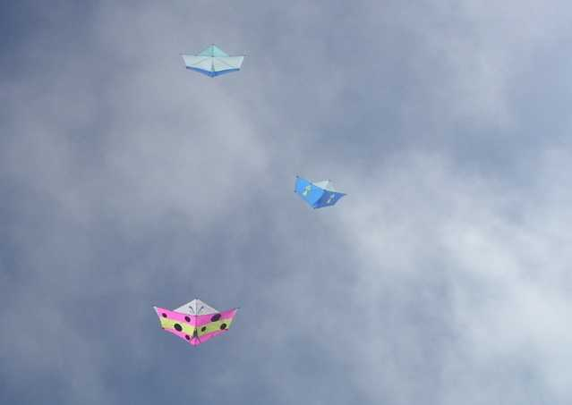
Les créateurs de Jessica 13, Sylvien, Philippe et Gaby ont chacun interprété les choses à leur manière. Ils nous offrent un beau ballet : je te prends, je te lâche, je te tourne autour, nous tournons ensemble... Bientôt prêts pour un mégateam de monofils !

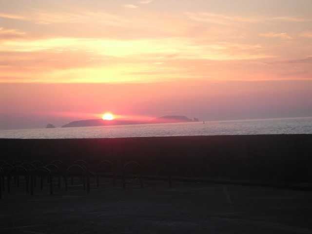
Et puis, ce soir, on peut voler aussi tard qu'on veut, enfin, jusqu'à 20 heures, après, faut savoir nager ! Mais le soleil restera présent au rendez-vous jusqu'au bout.